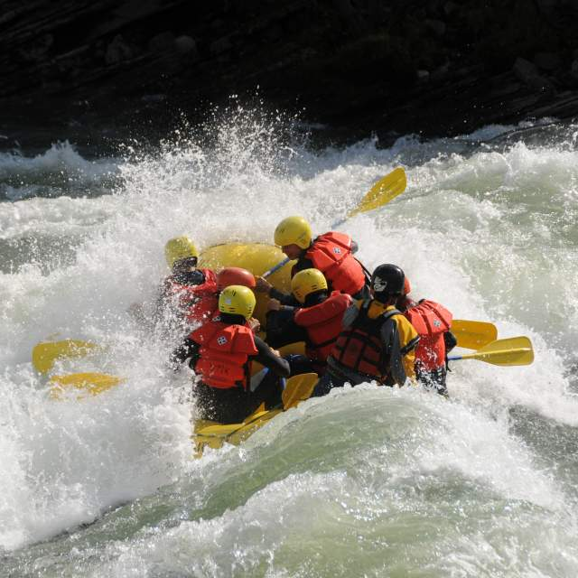

Our Purpose is to provide a thrilling adventure for those wild enough to seek it!
We want to satisfy the adventurous itch and provide our customers with good lasting memories and a desire to return.
At White Water Rafting, we pride ourselves on providing daring trips for the brave and serene trips to help you relax.
Safety is important to us and we want you to have the best experience possible without the risk of injury.
Offerings

We offer trips for seasoned and new rafters. Seasoned rafters are able to raft alone, while new rafters will require a guide.
Be sure to make a booking for large groups. Solo rafters need only pay the entry fee.
We also offer lessons to those who wish to become more experienced rafters, as well as first aid courses!